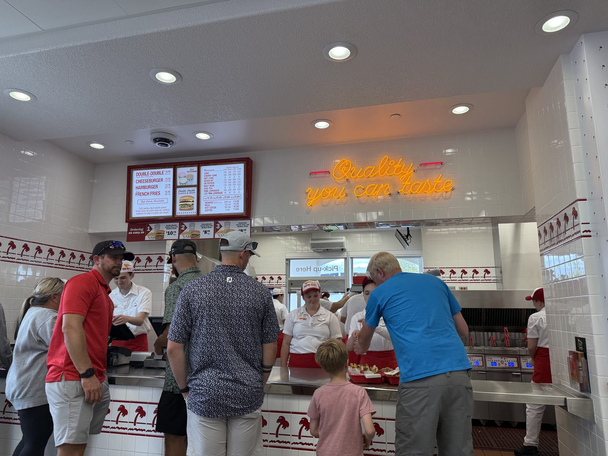
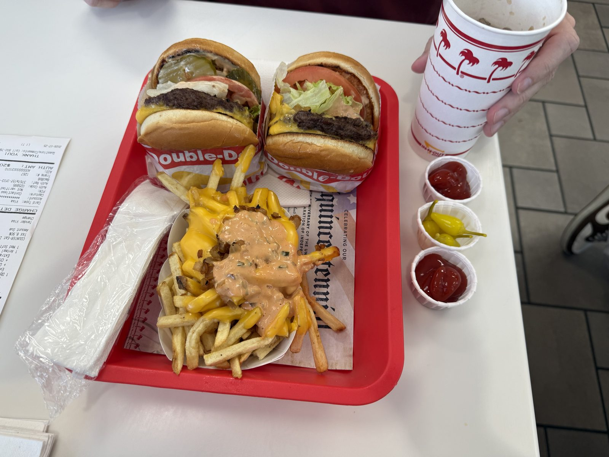
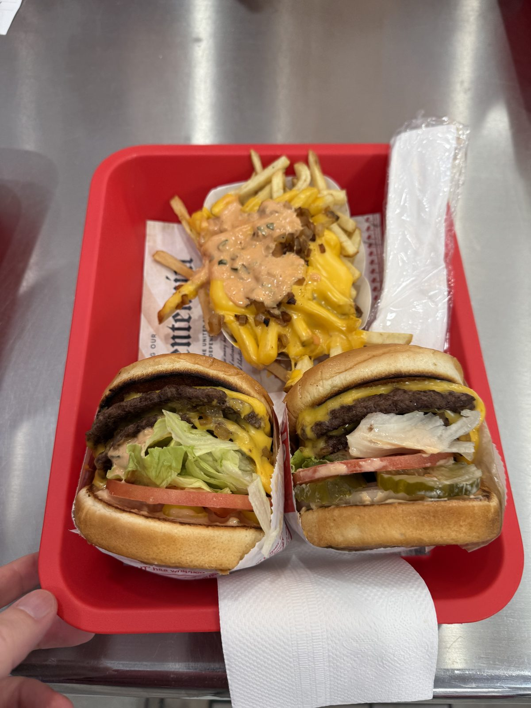
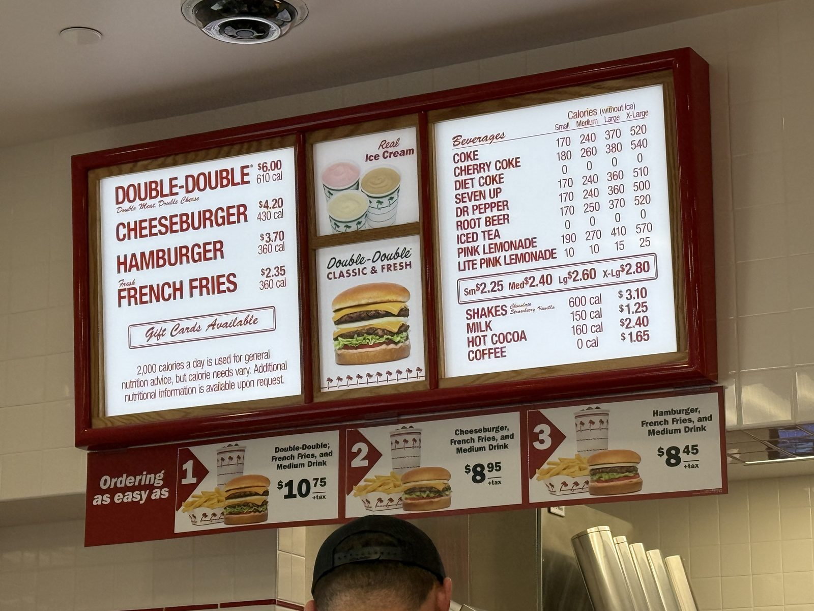
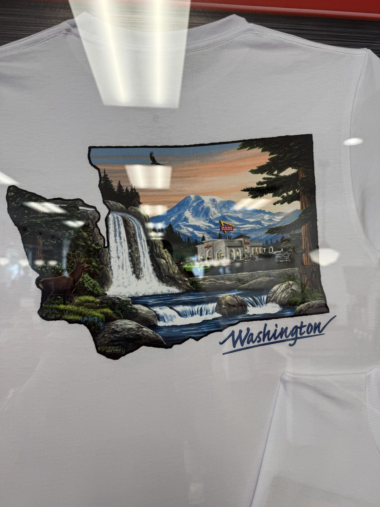
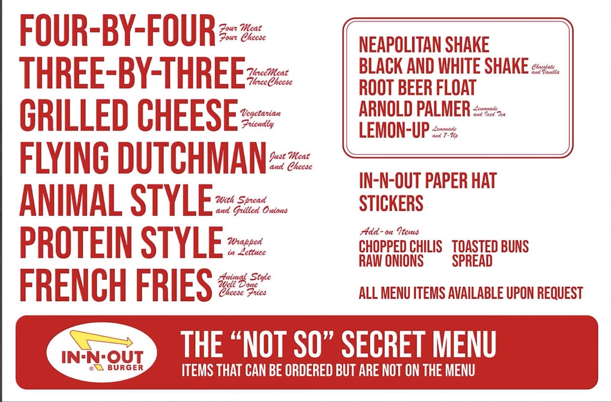

The Trick with the Peppers, at In-N-Out

Quarter to five on a Saturday afternoon, and the new In-N-Out on SE 3rd Way was three months old and still finding its rhythm — a line stacked two deep at the register under an orange neon sign reading Quality you can taste, a name called every twenty seconds or so from the pass, red trays moving fast in both directions. I grew up in California, where a Double-Double was never really a treat, more a fact of the landscape, the food equivalent of the 405 or June gloom. Eating one a few states north of that, older, on purpose rather than by default, is a different kind of meal, and I wanted to write it down before the particulars got away from me.
So the claim, stated plainly, the way I would actually say it to someone who asked: dollar for dollar, nothing else in fast food touches this. Not because it is the best burger you can buy — it is not trying to be, and I will get to why that matters — but because nobody else in the category has figured out how to sell something this simple, this fresh, and this cheap without cutting a corner you would notice if you looked. Everyone else has found the corner. In-N-Out, for reasons that turn out to be more interesting than "secret recipe," has mostly not.
The tray
Two Double-Doubles, Animal Style — the spread and grilled onions folded in, off the short not-so-secret list posted by the register — plus a shared order of fries, also Animal Style, plus three little paper cups: ketchup, ketchup, and pepperoncini. That third cup is the whole reason for this entry, and I am going to spend the next section on it rather than on the burger itself, because the burger is, honestly, the burger you already know. Two beef patties, two slices of American, lettuce, tomato, a spread that is mayonnaise-and-relish doing more work than that description suggests, on a bun that gets a few seconds face-down on the flat-top before anything else touches it. What I actually want to talk about is what happens to that burger in the two minutes after it lands on the tray and before anyone takes a bite.

The trick with the spread
Ask for jalapeños and pepperoncini tucked inside the burger itself rather than left on the side — this is not on the little card by the register, but a counter whose own printed menu says all items available upon request is not going to blink at a request for peppers. What you get back is an Animal Style Double-Double with real heat threaded through it instead of sitting next to it, which already improves on the stock version considerably.
But the part worth writing down happens after that, at the table, with nothing more than what's already on the tray. Every Animal Style order comes with more of that mayonnaise-relish spread than the burger can hold — it collects in the wrapper, gets left behind, gets wasted. Don't waste it. Spoon it into one of the ketchup cups. Add the ketchup. Add a pickle chip or two, crushed between two fingers rather than left whole. Then tip in the brine sitting at the bottom of the pepperoncini cup — not the peppers themselves, the vinegar-and-pepper liquid underneath them, which is the part almost everyone throws away — and stir.
What comes out the other side is somewhere between a remoulade and the good kind of bar-food dip: sweeter than pepperoncini juice on its own, sharper than ketchup on its own, with the spread's mayonnaise holding the whole thing together so it doesn't just taste like hot pickle water. It works as a fry sauce and it works spooned back onto the last few bites of the burger, and either way it is a genuinely better condiment than anything In-N-Out puts in a cup on its own — built entirely out of things they were already giving you for free. I don't know if anyone else does this. I do it every time now.

What it costs, and why that hasn't moved much
The board at this location, photographed the day I was there: a Double-Double is $6.00. A cheeseburger is $4.20, a plain hamburger $3.70, fries $2.35. A combo — burger, fries, a medium drink — runs $8.95 to $10.75 depending on the burger, tax not included. None of that is a discount-chain number, but stack it against what a "value" burger costs anywhere else in 2026 and the gap between price and what's actually in the bag gets hard to ignore.
There's a video that gets passed around showing the same board in 1990, Double-Double at $2.20. By that math the burger has not quite tripled in thirty-six years, in a country where almost everything else you'd want to eat has done considerably worse than that. Part of how they've managed it is structural: In-N-Out is still entirely owned by the Snyder family, run by Lynsi Snyder, with no shareholders to satisfy and no quarter to answer for if it misses one. A private company gets to decide what "success" means instead of having it decided for them by people who have never eaten there, and one of the things this one has apparently decided is that the price is not the lever they want to pull.
The other part is that they haven't cut the thing you'd notice. There are no freezers in an In-N-Out kitchen — the beef is 100% USDA chuck, ground fresh, and every store has to sit within roughly 300 miles of one of the company's three patty-making plants to get it. And as of this year they've been pulling Red Dye 40 out of the menu — the strawberry shake and the pink lemonade are now colored with beta carotene and vegetable juice instead, a change most of the industry has been slower to make than the marketing around it would suggest. None of this is why the burger tastes the way it does on its own. It's why it's allowed to.
The last piece is the one I find genuinely unusual: In-N-Out will not let a new employee near the grill. Cooking is a Level 6 associate's job, the top of a ladder that starts at Level 1, and getting there takes most people well over a year even moving quickly. Most fast food puts whoever's on shift in front of the flat-top on day one. In-N-Out makes you earn the right to be there — which is a strange thing to be strict about in an industry built on turnover, and probably the least visible reason the food is as consistent as it is.


Where the X comes from
Most In-N-Out locations plant two palm trees out front, trained to cross into an X above the sign, and the story behind it turns out to be true rather than the kind of thing that gets repeated because it sounds good. Harry Snyder, who founded the company with his wife Esther in 1948, was a fan of the 1963 comedy It's a Mad, Mad, Mad, Mad World, in which a group of strangers race across Southern California chasing buried cash marked by an X under a "Big W." Starting in 1972, Snyder began planting his own crossed palms outside new locations — an X marking not stolen treasure but his own, each store standing in for the suitcase. It is a strange thing for a burger chain to be quoting a Stanley Kramer movie, and a stranger thing that it's stayed a company tradition for over fifty years since.
Baldwin Park, where it started, is worth a word too. The original 10-foot stand at Garvey and Francisquito was California's first drive-thru restaurant, and the drive-thru part was Harry Snyder's own invention: a two-way speaker box, built and refined in his garage after hours, that let a driver order and be handed food without leaving the car. Every intercom speaker at every drive-thru in the country, McDonald's included, is running on an idea a newlywed couple worked out themselves in 1948 because they thought busy people wanted a sandwich without getting out of the car for it.
Two things printed on the cup, and one that isn't
Rich Snyder — Harry and Esther's son, who took over the company at twenty-four and ran it until his death in 1993 — started printing Bible verses on the packaging in 1987, and they're still there if you know to look. John 3:16 is on the bottom of the soda cups. Proverbs 3:5 is on the milkshake cup. Revelation 3:20 is on the hamburger and cheeseburger wrappers. The Double-Double gets Nahum 1:7. None of it is announced anywhere on the menu or the walls; it's a chapter-and-verse citation in small type on the inside of a wrapper, meant to be found rather than advertised, which is a fairly restrained way to run a piece of corporate messaging most companies would either avoid entirely or turn into a whole campaign.
The thing that isn't printed anywhere is the reason there's no Sprite on the menu. In-N-Out pours 7 Up instead, and the story — repeated by enough former employees and longtime customers that it has the shape of something true, though the company itself has never confirmed it on the record — is that a warehouse fire in 1978 nearly took the young chain down, and 7 Up's regional bottler lent In-N-Out use of its own cold storage and distribution to get back on its feet. In-N-Out is supposed to have promised, in thanks, to carry 7 Up in every store for as long as the company existed. Whether or not the fire story is the literal cause, it is genuinely strange that a chain otherwise loyal to Coca-Cola products carries one PepsiCo soda and no others — the kind of detail that suggests there really is a specific reason, even if nobody outside the company will say what it is on the record.
The not-so-secret menu
There's a card for this too, and it says exactly what it is at the bottom: items you can order that just aren't printed on the board. Four-By-Four and Three-By-Three (four or three patties, four or three slices of cheese), Grilled Cheese (no meat at all — genuinely vegetarian-friendly, which a burger chain rarely bothers to make easy), Flying Dutchman (two patties, two slices of cheese, nothing else — no bun), Protein Style (any burger wrapped in lettuce instead of a bun), and French Fries done Animal Style, well done, or plain Cheese Fries. On the drink side: a Neapolitan shake, a Black and White, a root beer float, an Arnold Palmer, and a Lemon-Up, which is just lemonade and 7 Up — so even the not-so-secret menu is quietly making use of the warehouse-fire soda.

What I'd order next
Protein Style, mostly out of curiosity about whether the spread trick above even survives without a bun to hold everything together — I suspect it just becomes a fork-and-knife situation, which might be an improvement. Flying Dutchman for the novelty of a burger that is unapologetically just meat and cheese. And the Neapolitan shake once, if only because ordering three flavors in one cup at a burger counter is the kind of small excess that's easy to regret skipping and hard to regret trying.
The practical bit
In-N-Out Burger — 13511 SE 3rd Way, Vancouver, Washington 98684, at the northwest corner of Mill Plain Boulevard and 136th Avenue. This location opened 23 April 2026 and is the chain's second in Washington State, after Ridgefield, about seventeen miles northeast. 📍 Get directions
Hours: 10:30 AM – 1:00 AM Sunday through Thursday, until 1:30 AM Friday and Saturday.
What things cost, from the board on 25 July 2026: Hamburger $3.70 · Cheeseburger $4.20 · Double-Double $6.00 · French Fries $2.35 · shakes $3.10 (small) · fountain drinks from $2.25. Combo meals (burger + fries + medium drink) run $8.95–$10.75 before tax.
Worth knowing: a new location three months in still draws a real line at peak hours — we arrived at a quarter to five on a Saturday and waited behind roughly fifteen people. It moves fast once you're in it; the kitchen turns trays quickly even three-deep at the register.